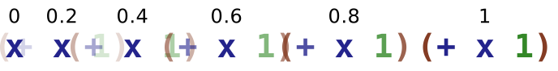
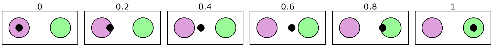
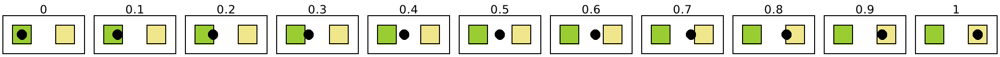
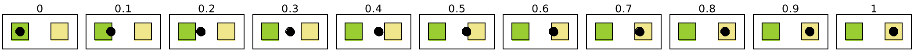
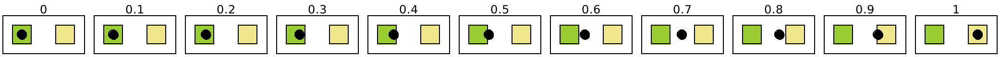
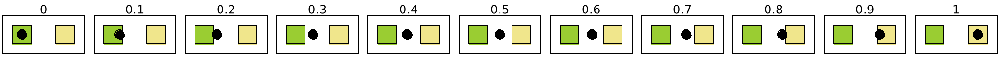
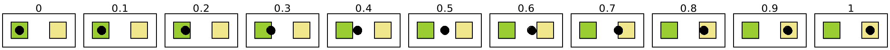
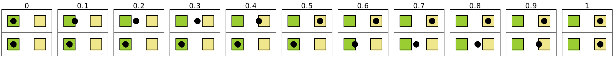

8 Animation Helpers
这些函数被设计为与 slideshow/play 中的幻灯片构造器一起工作。
8.1 图形插值
procedure
n : (real-in 0.0 1.0) p1 : pict? p2 : pict? combine : (pict? pict? . -> . pict?) = cc-superimpose
combine 参数决定了 p1 和 p2 是如何对齐变形的。 例如,如果 p1 和 p2 都包含多行文字,行高相同但行数不同, 那么使用 ctl-superimpose 将使上升线保持在相对于产生的pict顶部的固定位置, 而形状的其他部分围绕它变形。
> (define (do-fade n) (fade-pict n (rectangle 30 30) (disk 30)))
> (apply ht-append 10 (for/list ([n (in-range 0 1.2 0.2)]) (vc-append (text (~r n #:precision 2)) (do-fade n))))

procedure
(fade-around-pict n p1 make-p2) → pict?
n : (real-in 0.0 1.0) p1 : pict? make-p2 : (pict? . -> . pict?)
比如说、
> (get-current-code-font-size (λ () 20))
> (define do-fade (lambda (n) (fade-around-pict n (code x) (lambda (g) (code (+ #,g 1))))))
> (apply ht-append 10 (for/list ([n (in-range 0 1.2 0.2)]) (vc-append (text (~r n #:precision 2)) (do-fade n)))) 
用 (+ .... 1) 的形式对 x 的包裹进行动画处理。
procedure
(slide-pict base p p-from p-to n) → pict?
base : pict? p : pict? p-from : pict? p-to : pict? n : (real-in 0.0 1.0)
p-from 和 p-to 的图片通常是 p 在 base 中的 launder 的 ghost ,但它们可以是 base 中的任何图片。
> (define (do-slide n) (define p1 (disk 30 #:color "plum")) (define p2 (disk 30 #:color "palegreen")) (define p3 (frame (inset (hc-append 30 p1 p2) 10))) (slide-pict p3 (disk 10) p1 p2 n))
> (apply ht-append 10 (for/list ([n (in-range 0 1.2 0.2)]) (vc-append (text (~r n #:precision 2)) (do-slide n))))

procedure
(slide-pict/center base p p-from p-to n) → pict?
base : pict? p : pict? p-from : pict? p-to : pict? n : (real-in 0.0 1.0)
> (define (do-slide n) (define p1 (disk 30 #:color "plum")) (define p2 (disk 30 #:color "palegreen")) (define p3 (frame (inset (hc-append 30 p1 p2) 10))) (slide-pict/center p3 (disk 10) p1 p2 n))
> (apply ht-append 10 (for/list ([n (in-range 0 1.2 0.2)]) (vc-append (text (~r n #:precision 2)) (do-slide n)))) 
8.2 合并动画
procedure
(sequence-animations gen ...) → (-> (real-in 0.0 1.0) pict?)
gen : (-> (real-in 0.0 1.0) pict?)
procedure
(reverse-animations gen ...) → (-> (real-in 0.0 1.0) pict?)
gen : (-> (real-in 0.0 1.0) pict?)
8.3 拉长和压扁时间
procedure
(fast-start n) → (real-in 0.0 1.0)
n : (real-in 0.0 1.0)
procedure
n : (real-in 0.0 1.0)
procedure
(fast-edges n) → (real-in 0.0 1.0)
n : (real-in 0.0 1.0)
procedure
(fast-middle n) → (real-in 0.0 1.0)
n : (real-in 0.0 1.0)
假设我们的例子有以下的定义:
> (define (do-slide n fast-proc) (define p1 (filled-rectangle 20 20 #:color "yellowgreen")) (define p2 (filled-rectangle 20 20 #:color "khaki")) (define p3 (frame (inset (hc-append 25 p1 p2) 10))) (slide-pict/center p3 (disk 10) p1 p2 ; note use of fast-proc (fast-proc n)))
> (define (run-animation fast-proc) (apply ht-append 10 (for/list ([n (in-range 0 1.09 0.1)]) (vc-append (text (~r n #:precision 2)) (do-slide n fast-proc)))))
一个正常使用的动画看起来是这样的:
> (run-animation (λ (n) n)) 
fast-start 映射是凸的,所以
(slide-pict base p p1 p2 (fast-start n))
假设 n 均匀地增加,看起来会快速离开 p1 ,然后缓慢接近 p2 。
把它应用到上面的动画中会产生这样的效果:
> (run-animation fast-start) 
fast-end 映射是凹的,所以
(slide-pict base p p1 p2 (fast-end n))
假设 n 均匀地增加,看起来会缓慢地离开 p1 ,然后快速地接近 p2 。
> (run-animation fast-end) 
fast-edges 映射开始时是凸的,最后是凹的,所以
(slide-pict base p p1 p2 (fast-edges n))
似乎在远离 p1 时移动得很快,然后更慢,然后在接近 p2 时又很快,假设 n 均匀地增加。
> (run-animation fast-edges) 
fast-middle 映射起初是凹的,最后是凸的,所以
(slide-pict base p p1 p2 (fast-middle n))
> (run-animation fast-middle) 
在假设 n 均匀增加的情况下,似乎慢慢远离 p1 , 然后更快,然后在 p2 附近再次缓慢移动。
procedure
(split-phase n) →
(real-in 0.0 1.0) (real-in 0.0 1.0) n : (real-in 0.0 1.0)
下面是一个例子,显示了如何将 split-phase 应用于 fast-start 的例子中的动画:
> (apply ht-append 10 (for/list ([n (in-range 0 1.09 0.1)]) (define-values (n1 n2) (split-phase n)) (vc-append (text (~r n #:precision 2)) (do-slide n1 (λ (n) n)) (do-slide n2 (λ (n) n))))) 